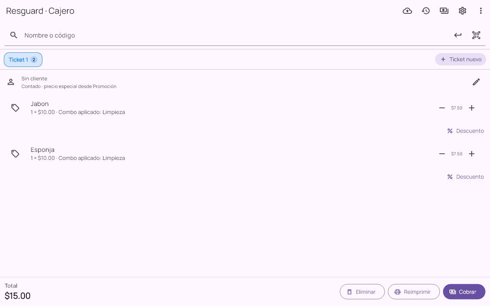
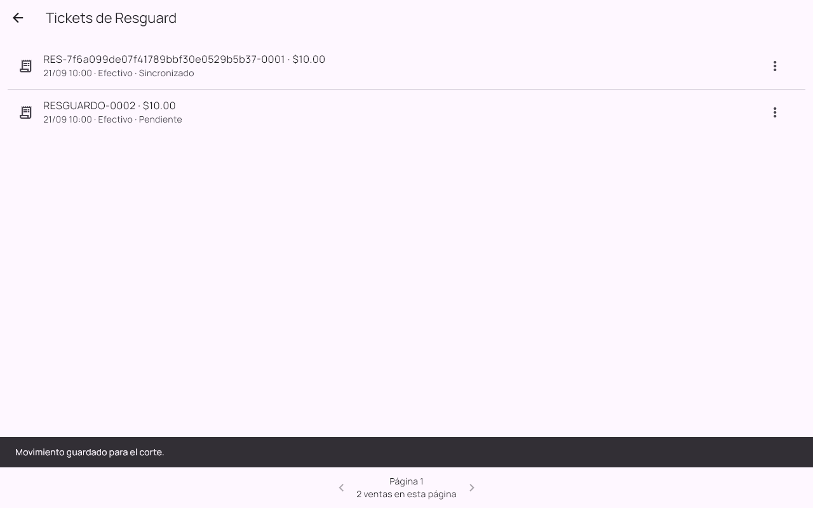

Manual de usuario
Windows y Android
Tenkai Resguard
De la preparación a la operación diaria. Elige un tema o sigue la guía en orden.
Las opciones pueden variar según la edición, los permisos y la versión instalada.
01 / 10
Preparar antes de una falla
Resguard necesita una copia de la tienda antes de trabajar sin POS.
- Activa el módulo Resguard en el POS compatible.
- Instala la aplicación en el equipo de contingencia.
- Conéctalo a la red de la tienda.
- Solicita vinculación y aprueba el dispositivo en POS.
- Entra con un usuario autorizado y descarga el catálogo.
- Comprueba la fecha de la copia y haz una prueba de operación.
02 / 10
Mantener la copia al día
La copia conserva los datos disponibles en la última descarga.
- Actualiza el catálogo cuando cambien productos, precios, promociones o usuarios.
- Revisa el nombre de la tienda y la fecha de descarga.
- Si una descarga falla, conserva la copia que ya tenías.
03 / 10
Usarlo durante una contingencia
Continúa la operación preparada para el turno de la caja principal.
- Abre Resguard en el equipo autorizado.
- Selecciona el mismo cajero que dejó abierto el turno de la caja principal e introduce su PIN.
- Comprueba los avisos y la antigüedad de la copia.
- Prepara tickets con los productos descargados.
04 / 10
Registrar ventas y pagos
Los comprobantes quedan guardados para conciliarlos después.
- Busca o escanea productos y revisa cantidades.
- Comprueba precios y promociones de la copia.
- Selecciona cliente de contado cuando la instalación lo permita.
- Registra pago, cambio y confirma.
- Entrega o imprime el comprobante con una impresora compatible.


Ampliar pantallaLa aplicación trabaja con el catálogo previamente descargado.
Pantallas de las aplicaciones con datos de demostración. La apariencia y las opciones pueden variar según versión, edición y permisos.
05 / 10
Registrar efectivo y pagos a proveedores
No mezcles estos movimientos con una venta.
- Elige entrada, salida o pago a proveedor.
- Captura un importe y un motivo claro.
- Revisa y guarda.
- Conserva los registros para el envío a POS.
06 / 10
Revisar y reimprimir
Pendiente significa que el POS aún no confirmó la integración.
- Abre Historial.
- Consulta el comprobante y su estado.
- Reimprime el mismo comprobante si se necesita.
- Recorre las páginas para revisar operaciones anteriores.


Ampliar pantallaConsulta comprobantes y distingue ventas pendientes de las confirmadas.
Pantallas de las aplicaciones con datos de demostración. La apariencia y las opciones pueden variar según versión, edición y permisos.
07 / 10
Enviar al recuperar POS
El envío se prepara desde Resguard y se acepta en la principal.
- Vuelve a conectar el equipo a la misma tienda.
- Revisa ventas y movimientos pendientes.
- Usa Sincronizar para preparar y enviar el lote.
- En POS, abre la recepción de Resguard y revisa el contenido.
- Acepta la integración en el turno correspondiente.
- Regresa a Resguard y comprueba que aparece confirmado.
08 / 10
Resolver diferencias al conciliar
Una contingencia puede dejar diferencias que requieren revisión.
- Comprueba el usuario y turno de destino.
- Revisa las incidencias de existencias y las operaciones recibidas.
- Si el turno está cerrado o el lote fue rechazado, conserva los pendientes y pide orientación.
- Confirma el resultado antes de dar por terminada la contingencia.
09 / 10
Permiso y cambio de equipo
La autorización preparada corresponde al equipo y a la tienda.
- Conserva la instalación autorizada.
- Si cambias de dispositivo, solicita su preparación con POS.
- Ante un problema de permiso, conserva historial y pendientes.
- Consulta soporte para recuperar una instalación antes de volver a operar.
10 / 10
Antes de actualizar o restaurar
Protege las ventas nuevas y sus pendientes.
- Comprueba que las versiones de POS y Resguard sean compatibles.
- Guarda una copia consistente antes de actualizar.
- Confirma y concilia lo pendiente cuando sea posible.
- No reemplaces la información reciente con una copia anterior.
- Prueba la recuperación con soporte.
Ayuda con tu instalación
Si un pendiente no se resuelve, conserva la operación y contacta a Tenkai con el nombre de la aplicación, versión y descripción del problema. Comparte capturas que no muestren accesos ni datos de clientes.
Contactar soporte